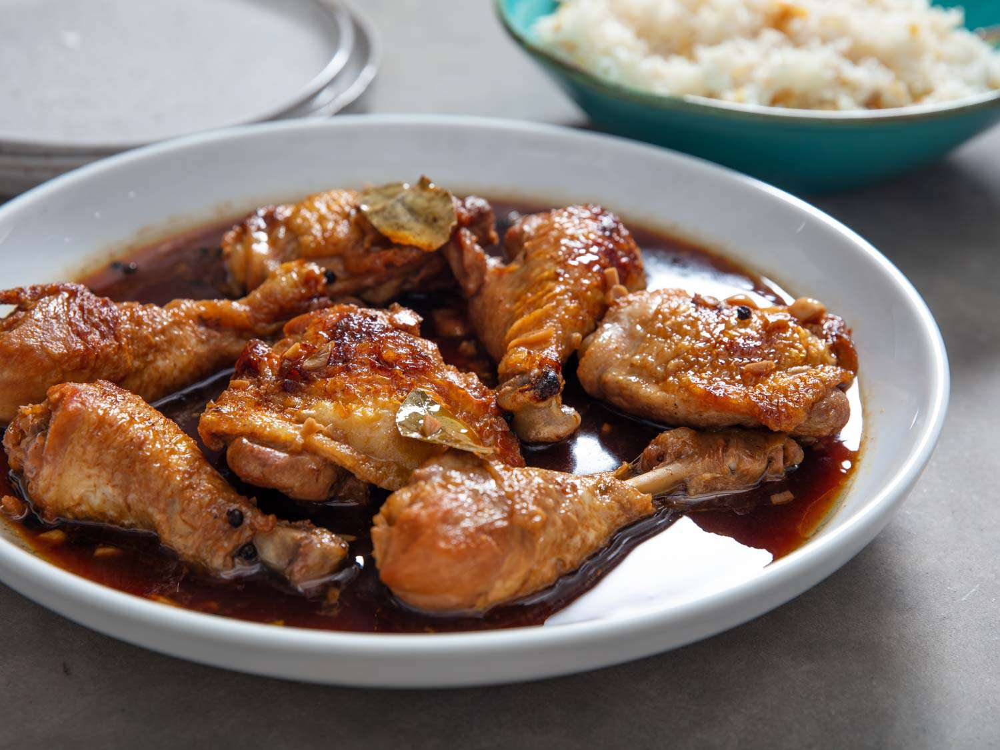

Chicken Adobo
Ingredients and Equipment
- 2lbs Chicken Thighs and/or Legs (Dark meat works best)
- 1/2 Cup Soy Sauce
- 1/2 Cup White Vinegar
- 2 Bay Leaves
- GarlicGarlicGarlic
- 1 Small can of Pineapple Juice (Honey can be used as a substitute)
- Peppercorns (or black pepper)
Optionally
- 1 Diced onion or Onion powder
- Large Skillet
- Bag or Bowl for Marinating
The Plan
This is my lovely fiancee's recipe for Chicken Adobo. She has been kind enough
to let me use it for this assignment. I seriously recommend trying it out. It is
an absolute delight
The Process
- Prepare your marinade and mix everything together. Let it marinate at least
an hour. Leave overnight for best flavor
- In a large skillet on medium-high heat, warm up the oil (neutral oil works best,
avoid olive oil) When its done, add the chicken to start it with a good sear.
- Add the rest of the marinade and lower the heat to medium. Let it simmer until
the sauce is reduced and the chicken is completely cooked through
